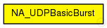
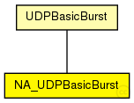

This documentation is released under the Creative Commons license
This documentation is released under the Creative Commons licenseThe following diagram shows usage relationships between types. Unresolved types are missing from the diagram.
The following diagram shows inheritance relationships for this type. Unresolved types are missing from the diagram.
| Name | Type | Description |
|---|---|---|
| UDPBasicBurst | simple module |
Sends UDP packets to the given IP address(es) in bursts, or acts as a packet sink. Compatible with both IPv4 and IPv6. |
| Name | Type | Default value | Description |
|---|---|---|---|
| destAddresses | string |
space-separated list of destination IP addresses, can be empty; see module description for possibilities |
|
| chooseDestAddrMode | string |
when to change the destination address |
|
| destAddrRNG | int | 0 |
random generator ID for selecting a destination address |
| localPort | int | -1 |
local UDP port number (-1: use ephemeral port) |
| destPort | int |
remote UDP port number |
|
| startTime | double | 1s |
application start time (start of the first burst) |
| stopTime | double | -1s |
application stop time (no packets are sent after this time); a negative or zero value means no limit |
| messageLength | int |
length of messages to generate, in bytes |
|
| burstDuration | double |
burst duration time (zero not allowed) |
|
| sleepDuration | double |
time between bursts (zero allowed) |
|
| sendInterval | double |
time between messages during bursts; usually a random value, e.g. 0.1s+uniform(-0.001s,0.001s); zero not allowed |
|
| delayLimit | double | 0 |
maximum accepted delay for a packet; packets with a bigger delay are discarded (dropped), zero value means no limit |
| Name | Value | Description |
|---|---|---|
| display | i=block/app,white;i2=status/green | |
| class | NA_UDPBasicBurst |
| Name | Direction | Size | Description |
|---|---|---|---|
| udpIn | input | ||
| udpOut | output |
| Name | Type | Unit |
|---|---|---|
| hopCount | long |
| Name | Title | Source | Record | Unit | Interpolation Mode |
|---|---|---|---|---|---|
| hopCount | Hop count | last |
// // simple NA_UDPBasicBurst extends UDPBasicBurst { parameters: //# Normal parameters @display("i=block/app,white;i2=status/green"); @class(NA_UDPBasicBurst); //# Hop count statistics @signal[hopCount](type=long); // Signal for hop count @statistic[hopCount](title="Hop count"; record=last); // Record the hop count }
This documentation is released under the Creative Commons license